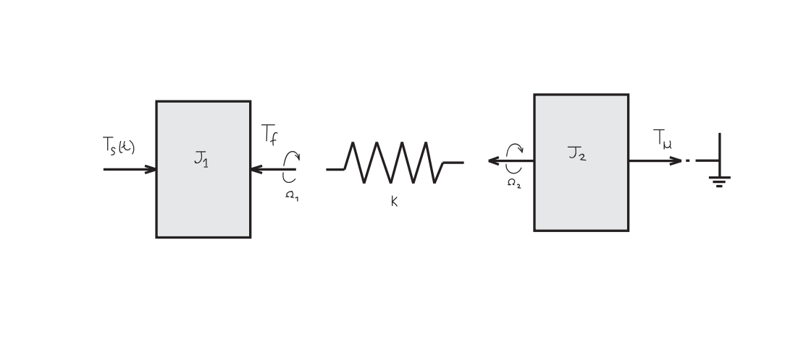
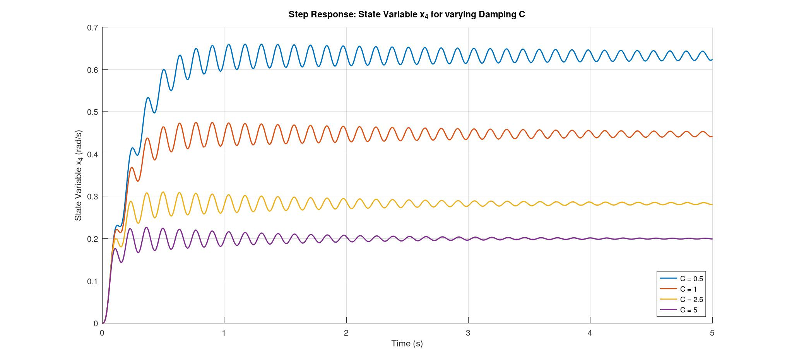
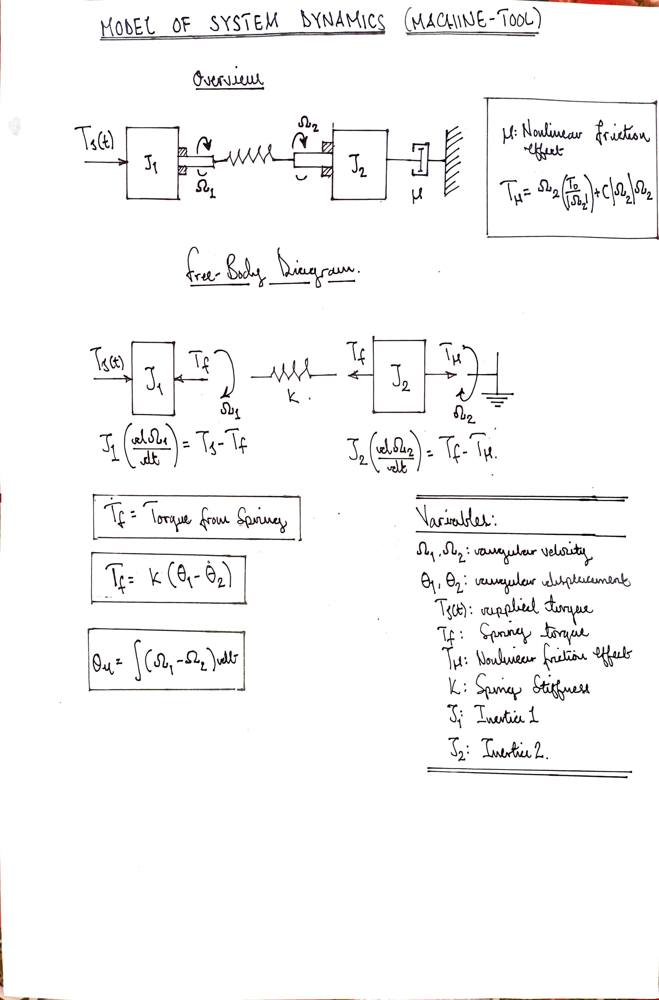
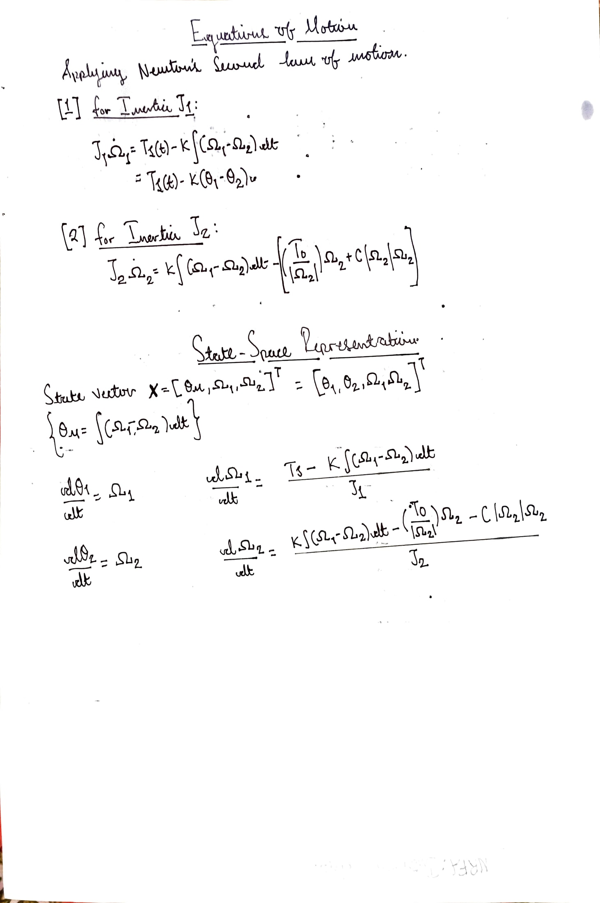
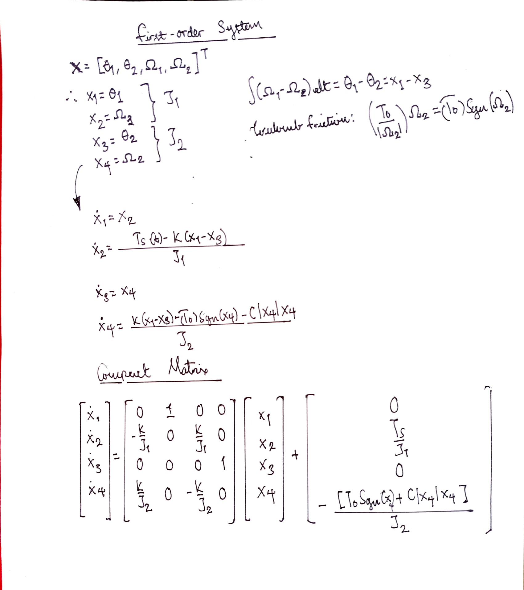

Simulation and Analysis of a Machine-Tool Drive System
Wezi Zimba Bachelor of Engineering
wzizimba@outlook.com
Abstract
This short project is an analysis of an ideal rotational machine-tool drive system consisting two inertias \(J_1\) and \(J_2\). The system is characterized by a non-negligible frictional effect, represented by μ, between \(J_2\) and the ground. This study covers the mathematical model derivation from first principles and its numerical simulation so as to evaluate the relation between the angulr velocity of inertia 2, \(\Omega_2\) and the damping \(C\).
1. Introduction
1.1. Problem Statement
Machine-tool drive systems are designed with flexible couplings between the motors and loads which results in torsianal effects that can lead to oscilliation effects. This study analyses a simplified model of a system such as that with a focus on the interactions between inertia \(J_1\) and inertia \(J_2\), a spring coupling of stiffness K and the nonlinear friction between \(J_2\) and the ground.
1.2. Description of System
The system consists of:
[1] Primary Inertia \(J_1\) which is driven by input torque \(T_s(t)\)
[2] Secondary Inertia \(J_2\) which is connected to the ground by nonlinear friction
[3] Torsinal Spring with stiffness \(K\)
The nonlinear friction is described by the equation\(^1\):
[1] To derive a mathematical model of the system form first principles
[2] To simulate the system using numerical methods
[3] To perform an analysis of the system response for varing damping, \(C\)
2. Mathematical Model Development
2.1. Assumptions made
[1] The bearing friction is negligible (i.e. the system is ideal)
[2] The spring is treated as a lumped parameter
[3] Parameters \(J\) and \(K\) are constant
2.2. Free-body Diagrm

Figure 1: Free body diagram of subsystems (Source: Author, 2025)
The susbsystems as in figure 1 are:
[1] Inertia \(J_1\): with applied torque \(T_s(t)\); angular velocity \(\Omega_ 1\); reaction torque \(T_f\); and angular displacement \(\theta_1\) .
[2] Spring Stiffness K: which twists under torque \(T_f = K(\theta_1 - \theta_2)\) and transmits torque between the inertias
[3] Inertia \(J_2\): subject to driving torque \(T_f\); nonlinear friction effect \(T_\mu\); angular velocity \(\Omega_2\) ; and angular displacement \(\theta_2\).
2.2. Governing Equations
Newton's Second Law of motion is applied to define the forces on the subsystems.
[1] \(J_1\) = 0.01 \(N \cdot m \cdot s^2\)
[2] \(J_2\) = 0.1 \(N \cdot m \cdot s^2\)
[3] K = 20 \(N \cdot rad^{-1}\)
[4] \(T_s(0)\) = 0.2
[5] C = [0.5, 5.0] \(N \cdot m \cdot s \cdot rad^{-1}\)
3.2. MATLAB Implementation of System
%% Function defining first-order ODE systm of equations
function dxdt = torsionalSystem(~, x, J1, J2, K, T_s, T0, C)
dx1 = x(2);
dx2 = (T_s-K*(x(1)-x(3)))/J1;
dx3 = x(4);
dx4 = (K*(x(1)-x(3))-T0*sign(x(4))-C*abs(x(4))*x(4))/J2;
dxdt = [dx1; dx2; dx3; dx4];
end
Code excerpt implementing a function defining the first-order equations of system (Source: Author, 2025)
% Simulation values of C
C_v = [0.5, 1.0, 2.5, 5.0];
for C = C_v
x0 = [0; 0; 0; 0]; %initial conditions
% First-Order ODE system solution
[t, x] = ode45(@(t, x)...
torsionalSystem(t, x, J1, J2, K, T_s, T0, C), t_e, x0);
% Plot for x4, Omega2
plot(t, x(:, 4), 'LineWidth', 1.5, 'DisplayName', ['C = ', num2str(C)]);
end
Solution of the ordinary differential equations by iterating the damping, C and a plot of the \(x_4\) variable (Source: Author, 2025)
4. Results and Analysis
The developed model exhibits a nonlinear second-order coupled system. For the purpose of simulating it, the system of equations was converted to one of first-order with focus on th angular velocity \(\Omega_2\) across varying valuues of \(C\). A plot of this relationship is shown in figure 2. The simulation reveals several key behaviours; High frequency oscilliations after the step input as a result of energy exchange between the energy of \(J_1\) and \(J_2\) and the energy stored in the spring.
The damping ratio is quadratic and velocity-dependant. Velocity decreases as the system nears steady-state and the damping effect weakens significantly.

Figure 2: Plot of \(x_4\) (angular velocity of inertia \(J_2\)) response due to varying damping, C (Source: Author, 2025)
5. Conclusion
The simulation results demonstrate that dynamic behaviour of a torsional system is significantly influenced the damping coefficient \(C\). The developed mathematical model predicts that an increse in the coeffecient reduces peak angular velocity.
In order to increase effeciency of the model, multi degree-of-freedom or finite element approches might be required, the inertias in industrial applications may vary hence the ought to be taken as such in model development and active vibration control needs to be considered
Ultimately, this model serves as a fundamental tool in engineered system development for the purposes of sizing and selection of coupling materials that withstand predicted torsional stresses.
References
\(^1\) Kulakowski, B.T., Gardner, J.F. Shearer, J.L. Dynamic Modeling and Control of Engineering systems. Third Edition. (2007) Cambridge: Cambridge University Press. ISBN-13 978-0-511-28942-2-
\(^2\) Bay, J. S. Fundamentals of Linear State Space Systems, First Edition. (1999). Virginia Polytechnic Institute and State University. The McGraw-Hill Companies Inc. ISBN 0-256-24639-4. pp38.
\(^3\) Abdolvahab, Agharkakli, U. S. Chavan, and Dr S. Phvithran, Simulation And Analysis Of Passive And Active Suspension System Using Quarter Car Model For Non-Uniform Road Profile, International Journal of Engineering Research and Applications, 2(5), 2012, 900-906.
\(^4\)Robert L.W. & Kent L.L., Modeling and Simulation of Dynamic System, Second Edition (1997), Prentice-Hall,
\(^5\) Bober, W., Introduction to Numerical and Analytical Methods with MATLAB for Engineers and Scientists, First Edition (2013). CRC Press. ISBN: 1466576022, 978-1466576025
\(^6\) Inman, J.D., Engineering Vibration, Fourth Edition, (2014)., Person Education, Inc. ISBN: 13:978-9-13-287169-3.
Appendix
A1: Mathematical Model Derivation



Figure A1: State-space model derivation from Newton’s second law of motion (Source: Author)